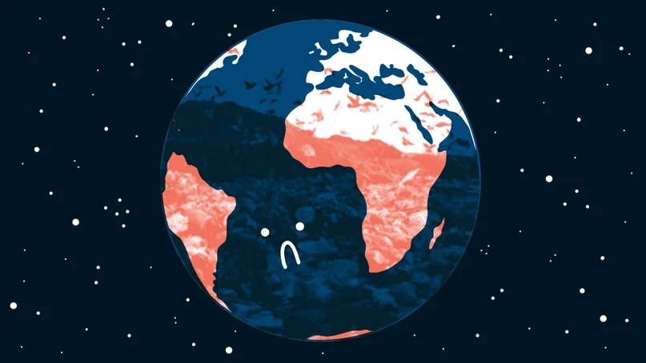

Александр Сорге — об изнасиловании матушки-планеты, экоактивистах и грязном ремесле под названием «политика».
Недавно, выйдя из магазина, я распаковал пачку сигарет и кинул целлофановую обертку в урну. Но порыв промозглого питерского ветра подхватил кусок прозрачного пластика и унес его куда-то вдаль, в бесконечное серое уныние. И тут же у меня развился острый приступ угрызения совести: от осознания, что я отравляю матушку-планету, превращаю родину моего будущего ребенка, который еще даже в яйцах не болтается, в токсичную свалку. От этой горькой мысли я закурил горькую сигарету, но вместе с никотином в голову пришла мысль: почему мегакорпорации продолжают упаковывать в пластик все что ни попадя, коррумпированные чиновники забивают железобетонный болт на переработку этого пластика, а мудак все равно я?

Пластмассовый мир, похоже, действительно побеждает. Причем в прямом смысле этого слова: куски одноразового пакета обнаружили даже на дне Марианской впадины, а совсем недавно пластик нашли и в какахах тюленей.
Уж не знаю, зачем ученые ковырялись в звериных экскрементах, но на то они и ученые, чтобы бить палкой по какому-нибудь говну и смотреть, что из этого выйдет.
Человечество, пукая и рыгая в своих мерзких бензиновых автомобилях после поглощения своих мерзких говяжьих чизбургеров, постепенно затягивает углекислую удавку на собственной шее.
Экотренд — вообще самый трендовый тренд на протяжении последних лет двадцати. Все эти воины социальной справедливости и мультигендерные цветноволосые личности — лишь перхоть времени, а вот битва за будущее планеты — она, понимаешь, нескончаема. И если ты откажешься присоединиться к этой Великой Войне, то тебя, конечно, не линчуют, но одарят пренебрежительным взглядом с ноткой отвращения. Мол, ты, падла такая, не только сосиски из мяса жрешь, а не авокадо, который раза в четыре дороже, но еще и полиэтиленовую обертку от этих сосисок в мусоропровод выкидываешь! Можно сказать, ставишь раком и насилуешь кормилицу-природу, своих будущих детей и каждого антарктического пингвиненка!
Нужно снижать потребление пластика, поднимать конопляную промышленность и использовать экологичные шопперы, кушать сою и бобы, одеваться только в секонд-хенде, чтобы снизить свой углеродный след. И, конечно же, репостить слезливые видео, чтобы к движению присоединялось еще больше народу. Мол, «возьмемся за руки, друзья» — вместе мы можем многое, да? Но заводы как штамповали пластиковые бутылки, так и штампуют, а одноразовые пакеты как копились на свалках, так и копятся: проблема не в том, что мы потребляем огромное количество пластика, проблема в том, что перерабатывается всего девять процентов.
Осознанное потребление — вещь, наверное, богоугодная. Только какой от него толк, когда половину из всего углеродного следа человечества оставляют всего 10 процентов богатейшего населения планеты. И вот эти 10 процентов: кинозвезды, политики, владельцы фабрик, заводов и пароходов пытаются втолковать мне, мне и какой-нибудь Зинаиде Пердинишне с зарплатой в 15 тысяч, что это мы с ней должны ответственнее относиться к потреблению. Так может, лучше заставить толстосумов поумерить свои аппетиты? Может, лучше спросить с хозяев заводов, что коптят небо над нами и чиновников, что забивают болт на переработку пластика? Только вот незадача — они не сидят в инстаграме, не лайкают трогательные фотографии нерпы, запутавшейся в пластиковом пакете. И им абсолютно плевать, сколько там было выброшено углекислоты при производстве их трехпалубной яхты, отделанной красным деревом.
Вся эта теория малых дел — лишь изощренный способ аутофелляции, придуманный богатыми дядями для наивных дурачков, чтобы они не лезли в серьезный бизнес. Хипстерские секонд-хенды и веганские забегаловки, экологичные шопперы и электросамокаты вместо машин — вы, блять, серьезно? Какой толк от ваших сраных шопперов, когда под Архангельском строят свалку, способную превратить весь Русский Север в токсичную пустошь? Какое, к черту, осознанное потребление, когда в Норвежском море медленно протекает мини-Чернобыль под названием «Комсомолец» — подарок советской империи? Нет, ребята, вы либо трусы снимите, либо крестик наденьте. Конечно, это не значит, что нужно бросать мусор мимо урны или наступать на хвост бездомным животным. Просто делать все эти малые дела нужно уже после того, как налажена большая система.
А иначе пикеты, репостики и петиции — просто способ ментальной мастурбации, где важен процесс и ощущение эрегированного эго, а не результат: какой смысл сортировать мусор, если его все равно потом вывалят в одну кучу?

По идее, тут на помощь должны приплыть бородатые рыцари, пахнущие дурман-травами — экоактивисты, эти доброкачественные метастазы гражданского общества. Они бы могли помочь недовольным жителям написать кляузу в спортлото на близлежащий завод, что сливает химикаты в речку, или сколотить партию зеленых, чтобы отстаивать свои интересы в парламенте. В крайнем случае, нанять команду лоббистов и пиарщиков, которые сумели бы протолкнуть какой-нибудь полезный для природы законопроект. Например, ввести налог на пластик: в Британии подобный закон помог снизить использование одноразовых пакетов на 85 процентов, в Дании — на 90 процентов.
Но вместо этого тот же Гринпис предпочитает закупаться сверхсовременными кораблями и вертолетами, чтобы повесить свой сраный баннер на очередной нефтяной платформе. Да, кто-то скажет: все эти громкие акции нужны для привлечения внимания к проблеме. Что, мол, проблему заметят СМИ и раструбят о ней через оптоволоконные рупоры. После этого массы широкой общественности начнут недовольно бурлить и, конечно же, делать еще более щедрые пожертвования, чтобы активисты смогли купить еще более современные лодки и устраивать еще более громкие акции. Где-то здесь подвох, не находите?
Да и все эти экологические фонды — далеко не такие зеленые, какими хотят казаться. Громкие лозунги не мешают Всемирному фонду дикой природы сотрудничать с диктаторами и производителями химического оружия и заниматься банальным экокрышеванием. А примкнувшее к ним стадо фанатиков-активистов, которые ни черта не смыслят ни в экологии, ни в климатологии, делает их похожими на компашку пассионарных рэволюционэров, которые наломали дров, а что с этими дровами делать — не знают. Потому что среди них нет никого, кто сумел бы затопить печку, и уж тем более того, кто спроектировал бы паровой котел. Зато, благодаря граммовым мозгам и дичайшему зуду в заднице, эти «активизды» проводят совершенно бессмысленные пикеты и выдвигают абсолютно дебильные требования (вроде распила танкера Brent Spar), которые не только не идут на пользу матушке-природе, но еще и вредят ей. Есть Грета Тунберг — она, чтобы привлечь внимание к проблеме глобального потепления, отказывалась ходить в школу по пятницам и даже ездила в Давос махать своим маленьким кулачком перед толстокожими бюрократами. Есть полтора миллиона школьников по всему миру, последовавших примеру Греты. А есть горстка биологов, которые совершенно точно не прогуливали школу в детстве. И вместо того чтобы пикетировать, ученые лазали по вонючим свалкам — искали бактерии и грибы, которые умеют перерабатывать пластик — и таки нашли! Угадайте, от кого из них пользы больше?
Мессианство — это, конечно, круто. Иисус и его двенадцать кентов тоже много проповедовали за все хорошее против всего плохого. Только вот остальные его последователи занимались делом, а не языком мололи: кто хлебушка напечет, кто осла пророку приведет, а кто и апостола приютит. Забота о природе — это не нелепые акции. Это когда конструктор проектирует ядерный реактор так, чтобы он не засрал все вокруг в случае большого бадабума. Это когда экономисты и бизнесмены хотят не только высосать все профиты из матушки-природы, но и сделать так, чтобы Земля после них не схлопнулась. Это когда юристы разрабатывают законы не под давлением международных эконаемников, а вместе с экспертами. И депутаты, которые эти законы принимают, даже и в ущерб собственным интересам.
Когда я закуривал сигарету, в сотнях километров от меня два пилота пытались посадить огромный пассажирский лайнер на кукурузное поле. Как выяснится позднее, самолет потерял оба двигателя оттого, что в них попали чайки, кружившие над ближайшей свалкой. Свалкой нелегальной. Все эти лидеры экологических протестов, международные активисты и просто сочувствующие им блаженные каждый раз лупят себя по груди и истошно орут, что природа не имеет границ, Земля — наш общий дом, а они сами — вне политики. Более дерьмовый лозунг придумать сложно. Одни и те же люди готовы постить картинки с горящей Сибирью, отказаться от пластика и подписывать петиции против вырубки очередного леска, и при этом отказываются ходить на митинги и ни разу не посещали избирательную кабинку, ведь они «аполитичны». Политика представляется им серьезным бизнесом, которым занимаются солидные дяди в двубортных пиджаках: какой-то грязной субстанцией, кипящей в высоких кабинетах с дубовыми столами. Но этой пресловутой субстанцией пропитано все: и травинка, и лесок, в поле каждый гребанный колосок.
Каждый раз, когда вы вдыхаете городской воздух с троекратным превышением уровня диоксинов, во сне ли, когда едите или трахаетесь, — вы уже участвуете в политике.
Соглашаясь жить в дерьме рядом с заводами, которые не только не ставят фильтры на трубы, но и не платят ни копейки в бюджет за то, что отравляют воздух, вы тем самым делаете свой выбор. И берете за него ответственность. Почему-то, когда разговор заходит о таких высоких материях, как спасение далеких амазонских лесов и борьба с тихоокеанским мусорным пятном, большинство начинает брызгать слюной и радостно кричать «вместе мы — сила!» А когда речь идет о том, чтобы заставить власть заняться переработкой мусора, все почему-то опускают взгляд и начинают что-то там бубнить про «начни с себя». Да, начинать нужно действительно с себя. Но не покупая гребаные холщовые сумки, а заставляя государство решать проблему. Бастовать не против заражения радиоактивным цезием берегов Белого моря, а против тех, кто это заражение допустил. И выгонять их на мороз.